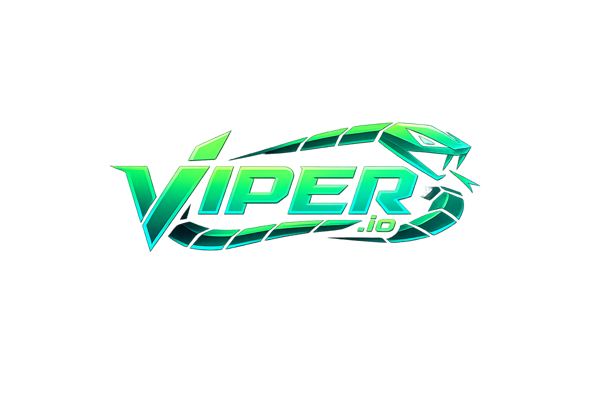
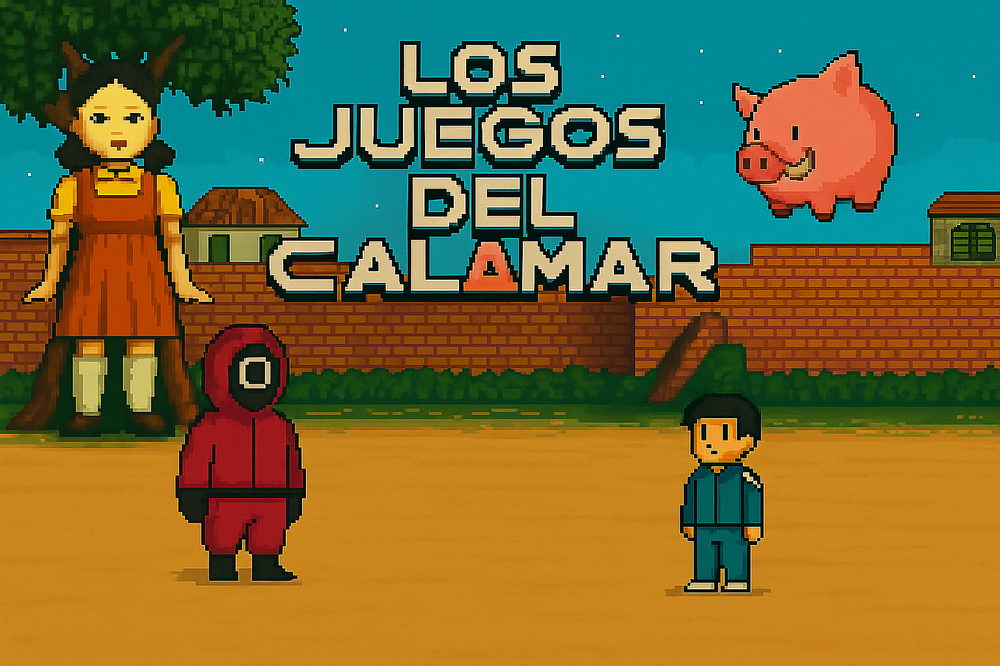
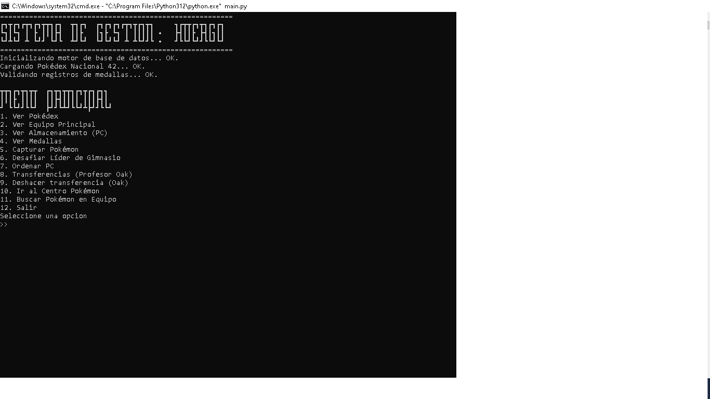
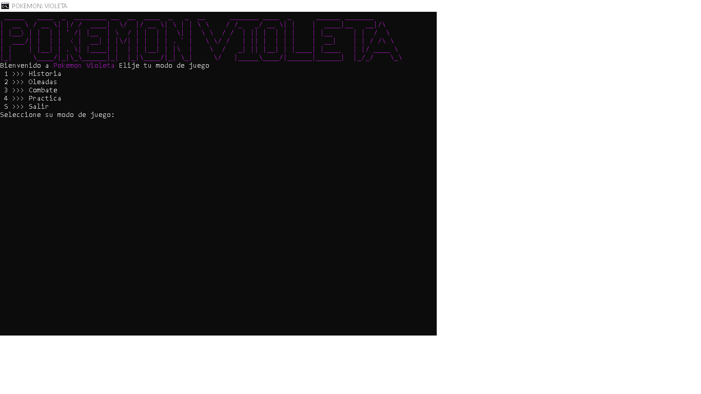

Hola, mi nombre es Ian y soy
estudiante en programación
Desde sitios web hasta proyectos personales,
convierto ideas en páginas modernas, funcionales y atractivas.
Mis proyectos
Una selección de juegos y proyectos que desarrollé mientras aprendía programación.

Viper.io
Una recreación de Slither.io con skins, bots, minimapa y modos de juego.
Desarrollado con Python y Pygame CE. Incluye personalización de skins, enemigos controlados por IA, un minimapa en tiempo real, efectos de sonido, configuración de calidad y modos multijugador local/LAN.

Squid Game
Una colección de minijuegos inspirados en El juego del calamar.
Proyecto realizado con Python y Pygame que reúne minijuegos como luz roja/luz verde, dalgona, canicas, puente de cristal, tira y afloja y salto de la cuerda, con menús y recursos visuales propios.

Pokémon Huergo TP
Juego de consola donde apliqué por primera vez stacks, queues y listas enlazadas.
Trabajo práctico de Algoritmos y Estructuras de Datos. Implementé una Pokédex, equipo principal, almacenamiento PC, medallas, capturas, gimnasios y transferencias usando pilas, colas y listas enlazadas.

Pokémon Violeta
Juego de consola con combates y modos de juego que desarrollé durante 3.º año.
Proyecto de 3.º año hecho en Python. Cuenta con modo historia, combates entre Pokémon, práctica contra la máquina y un modo oleadas, consumiendo datos de Pokémon y movimientos para cada batalla.
Sobre mi
Soy una persona interesada en la tecnologia y aprender sobre la programacion
IAN DAVIRRO
Desarrollo proyectos y exploro nuevas tecnologías mientras sigo aprendiendo en el proceso.
ConectemosHola! Soy Ian Davirro,
Estudiante de programación y desarrollador en proceso. Me gusta crear cosas que no solo funcionen bien, sino que también se vean bien.
Actualmente estoy aprendiendo y desarrollando proyectos para mejorar mis habilidades, explorando principalmente el desarrollo web, Python y otras tecnologías como Java.
Mis habilidades:
Trayectoria
Preguntas frecuentes
Respuestas a las preguntas más comunes sobre mi trabajo y proceso.
¿Qué tipo de proyectos realizás?
+
×
Realizo sitios web y proyectos personales, buscando que sean modernos, funcionales y atractivos.
¿Trabajás de forma freelance o tiempo completo?
+
×
Actualmente estoy abierto a colaborar en proyectos que me permitan seguir aprendiendo y creando.
¿Cómo encarás nuevos proyectos?
+
×
Primero entiendo la idea, organizo las tareas y luego desarrollo una solución clara y funcional.
¿Cuánto tarda normalmente un proyecto?
+
×
Depende de la complejidad. Los proyectos más chicos pueden realizarse en pocos días.
¿Cómo podemos empezar?
+
×
Podés contactarme desde el botón de agendar cita para contarme sobre tu idea.